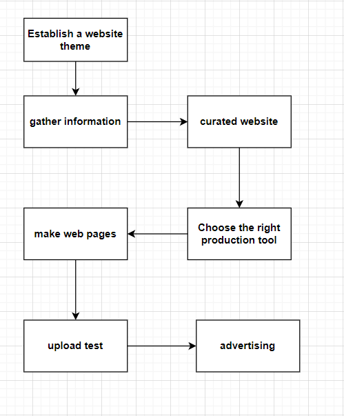

Project Name: Creation of a Second-hand Trading Platform for College Students Hardware required: A computer that can write software, a local server Software: codepen writing software ps drawing software icould Values: It is possible to make full use of the idle resources of college students and help them realize their idle resources. With the popularization of 5G, the improvement of college students' awareness of the use of idle resources, and the improvement of second-hand idle economic infrastructure and supporting systems, the second-hand realization market may become a new market. development point
